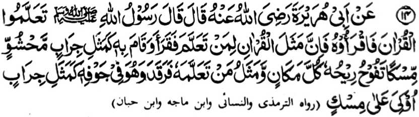

Miyakathitayan ko Abu Hurairah (Radhiallaho ‘Anho) a pitharo iyan a pitharo o Rasulollah (Sallallaho ‘Alaihi wa Sallam), “Paganada niyo so Qur’an go batiya-a niyo sekaniyan ka mata-an a aya ibarat o Qur’an ko tao a miyaganadon ago pembatiya-an niyan ago gi-i niyan ipamayandeg [ko Sambayang] na lagid o tago-ay sa mamot a kaleleka-an so ngari iyan na phelangkap so kanayo iyan ko mbala-bala, go aya ibarat o tao a piyaganad iyan sekaniyan [a Qur’an] a makatotorog a so rareb iyan na ndodon sekaniyan [a Qur’an] na lagid o tago-ay sa mamot a so ngari iyan na kalelekheban.”
Aya ma-ana niyan na aya ibarat o tao a piyaganad iyan so Qur’an na taros a siniyap iyan ago pembatiya-an niyan ko Sambayang a Tahajjud na lagido tago-ay sa mamot a opama leka-i ngka so ngari iyan na giyangkoto a walay na khapeno o kanayo iyan. Sakamaoto, a so walay na khapeno a sindao ago manga pipiya misabap sa kapembatiya o Hafiz.
Apiya pen baden makatotorog so Hafiz o di na di sekaniyan mbatiya sabap sa kadarainon, na so Qur’an a madadalem ko poso iyan na aya mamot. Giyangka-iya kadarainon na aya mini-onga niyan na madakel a kiyapapasan ko manga kalbihan o Qur’an, ogaid na so poso iyan, na madadalemon so kamot o Qur’an.